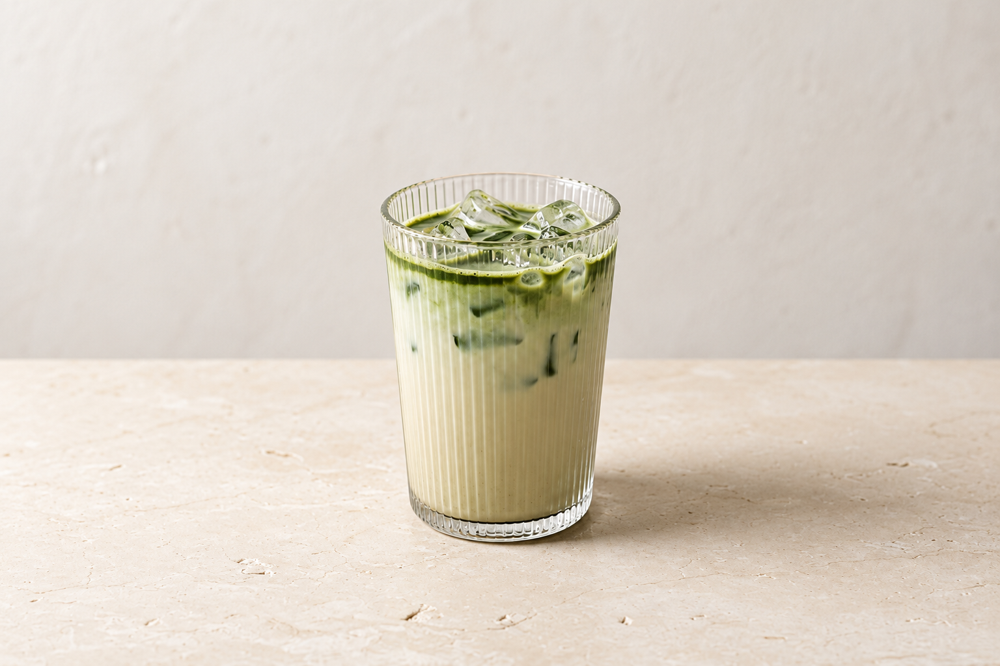
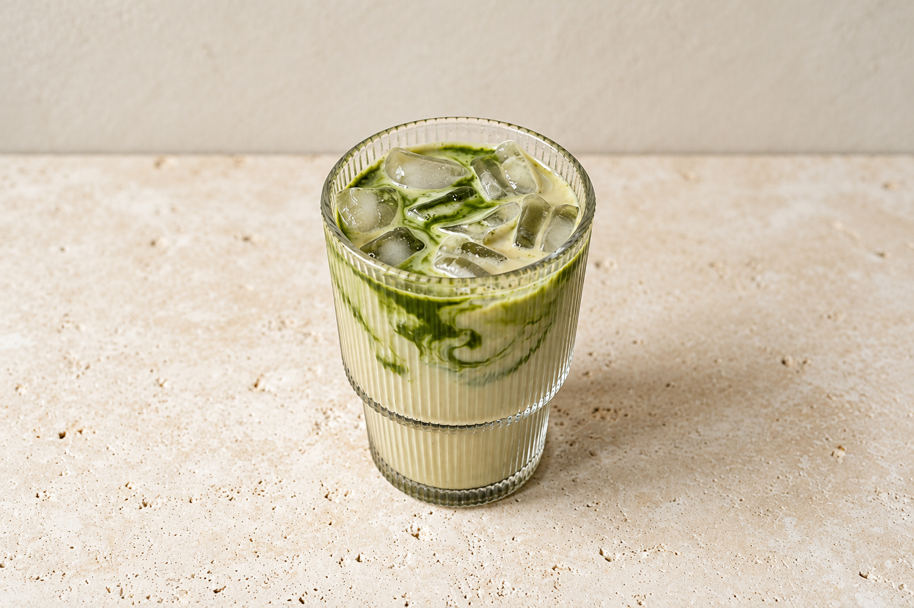
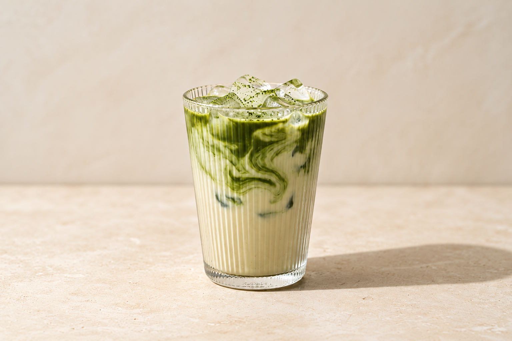

Oat Matcha
Latte
Japanese matcha with silky oat milk. Rounded, earthy notes with a soft oat finish.
• Lactose-free- Japanese matcha
- Whisked with water for an earthy green tea base.
- Oat milk
- A silky texture and a soft oat finish.
- Ice
- Served over ice, gently chilled.
Earthy matcha leads, softened by the mellow sweetness of oat milk. Smooth and rounded on the palate, with a gentle green tea edge and a lingering oat finish.
A note
Lactose-free does not mean allergen-free. Our drinks are prepared in a shared space; please speak to our team about allergies.